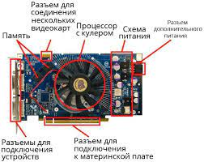

|

Видеока́рта (также видеоада́птер, графический ада́птер, графи́ческая пла́та, графи́ческая ка́рта, графи́ческий ускори́тель) – устройство, преобразующее графический образ, хранящийся как содержимое памяти компьютера (или самого адаптера), в форму, пригодную для дальнейшего вывода на экран монитора. Обычно видеокарта выполнена в виде печатной платы (плата расширения) и вставляется в слот расширения, универсальный либо специализированный (AGP, PCI Express). Современные видеокарты не ограничиваются простым выводом изображения, они имеют встроенный графический процессор, который может производить дополнительную обработку, снимая эту задачу с центрального процессора компьютера.
Современная видеокарта состоит из следующих частей:
-Графический процессор
-Видеоконтроллер
-Видео-ПЗУ
-Видео-ОЗУ
-Коннектор
-RAMDAC и TMDS
Характеристики:
>Ширина шины памяти, измеряется в битах — количество бит информации, передаваемой за такт. Важный параметр в производительности карты.
>Объём видеопамяти, измеряется в мегабайтах — объём собственной оперативной памяти видеокарты. Больший объём далеко не всегда означает большую производительность.
>Частоты ядра и памяти — измеряются в мегагерцах, чем больше, тем быстрее видеокарта будет обрабатывать информацию.
>Текстурная и пиксельная скорость заполнения, измеряется в млн. пикселей в секунду, показывает количество выводимой информации в единицу времени.
>К важным техническим особенностям, характеризующим видеокарту, можно отнести встроенную систему охлаждения, если она реализована и коннекторы интерфейсов передачи данных.
|